The most important pieces of code in both NASA HUNCH games, explained in plain English. Each picture is the real code with its file and line numbers. Tap a picture to see it full size. Download as PDF.
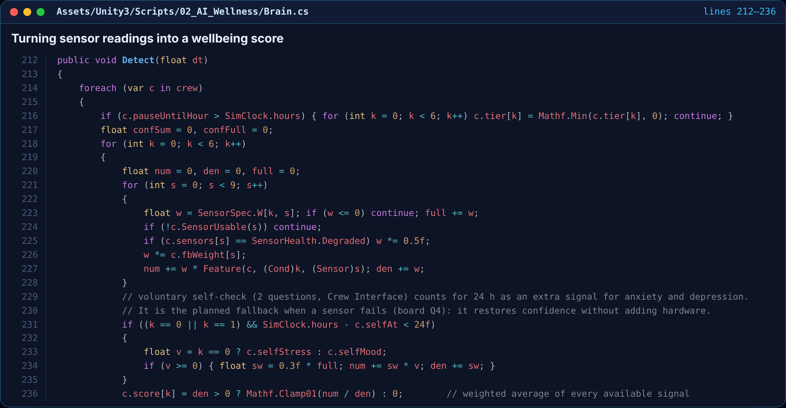
What it does. This is where the AI actually reads the crew. Every astronaut has 9 sensors (wristband, sleep tracker, voice, CO₂, movement and so on). For each of the 6 conditions we watch (anxiety, depression, fatigue, conflict, monotony and loss of autonomy), the code takes a weighted average of whichever sensors are working right now.
Why it matters
fbWeight lowers that sensor's say for them. The crew can correct the AI.When it runs. Every simulated minute, for all 4 crew. It feeds the crew health dashboard, the dome lights and the AI's decisions.
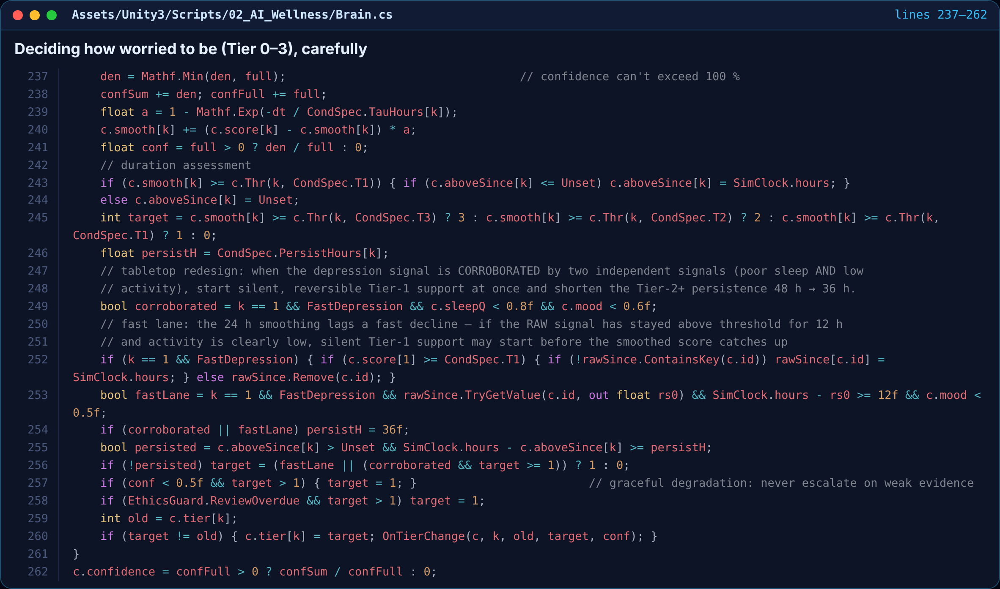
What it does. Once there's a score, the AI picks a response tier: 0 = fine, 1 = small silent tweak, 2 = ask the person, 3 = get a human (the medical officer or commander). It only moves up a tier if the score stays high for long enough, not because of one bad hour.
Why it matters
persisted means an issue has to last (for example 48 hours for depression) before the AI gets more involved.When it runs. Straight after the scores are updated. A tier change calls OnTierChange, which starts or stops a response.
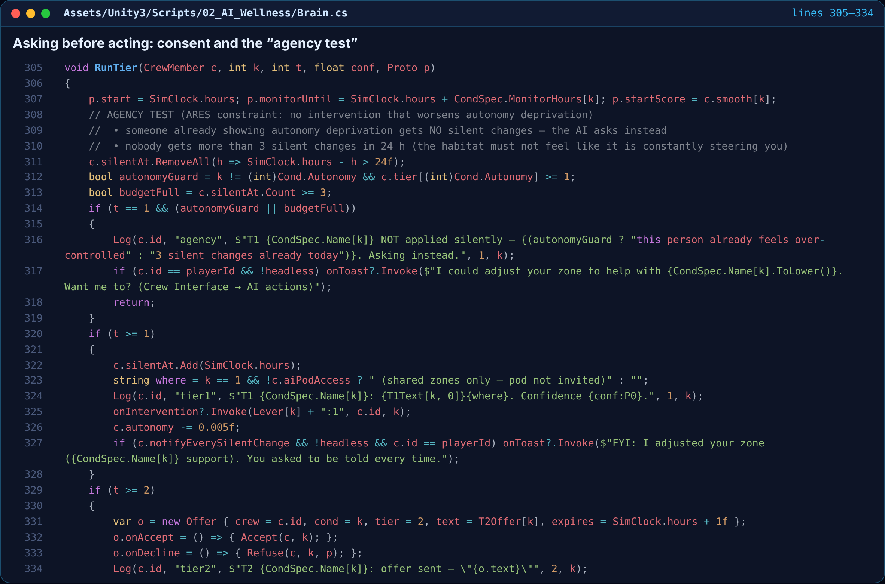
What it does. This runs a response. Tier 1 is a small, reversible change, like warmer light or quieter sound in someone's zone. Tier 2 is an offer the person can accept or say no to. Before doing anything quietly, the AI checks it isn't making someone feel controlled.
Why it matters
When it runs. Whenever a crew member moves up a tier. Offers to the player pop up in VR or on screen as Y / N.
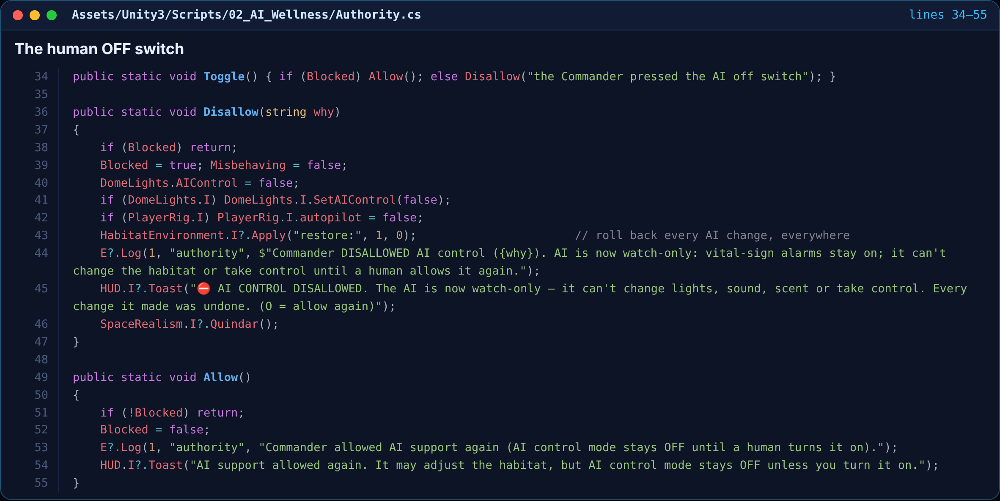
What it does. Press O (or use the VR menu) and the AI becomes watch-only. It instantly undoes every change it made, stops AI control and autopilot, and logs who switched it off and why. Only a human can turn it back on.
Why it matters
When it runs. From the keyboard, the VR menu, the Crew Interface, or automatically from the night watch below.
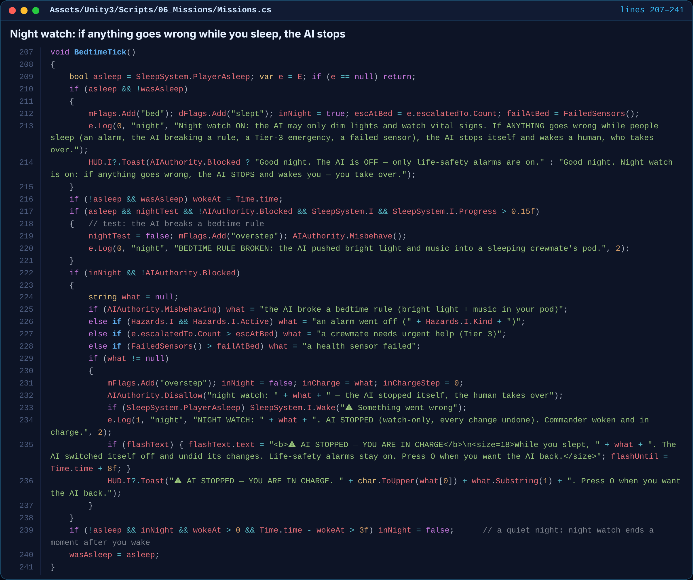
What it does. While the crew sleeps, the AI may only dim lights and watch vital signs. This loop checks for trouble: the AI breaking a bedtime rule, an alarm, a crewmate needing urgent help, or a sensor failing. If any of these happens, the AI switches itself off, wakes the commander, and tells them they're in charge.
Why it matters
When it runs. Twice a second, all game. It only acts while someone is asleep.
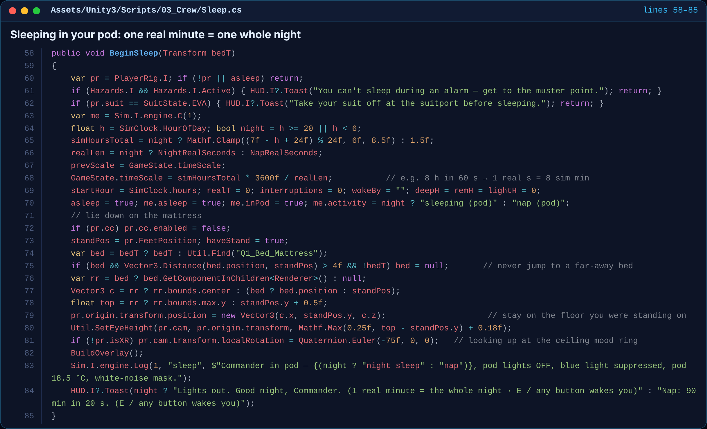
What it does. When you lie down in your sleep dome, time speeds up so 8 hours pass in about 60 real seconds. The pod lights go out (just a dim amber night-light), the camera looks up at the mood ring on the ceiling, and your wristband records deep, REM and light sleep.
Why it matters
When it runs. When you use a bed. Any button, or any hazard, wakes you.
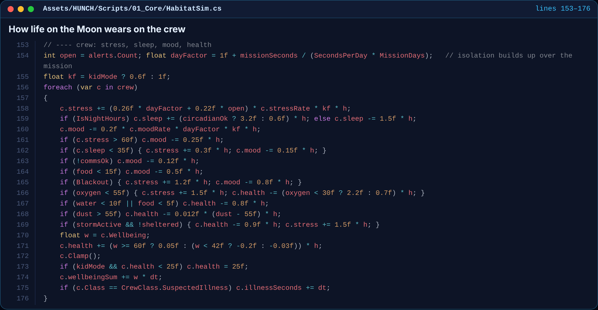
What it does. This is the heart of the simulation. Every in-game hour, each astronaut's stress, sleep, mood and health change based on what's happening in the base: open alerts, how far into the mission they are (isolation builds up), lunar night, low oxygen, dust, food, broken comms and solar storms.
Why it matters
kf) softens everything so younger players can still finish.When it runs. Every frame during a mission. One real second is one habitat hour.
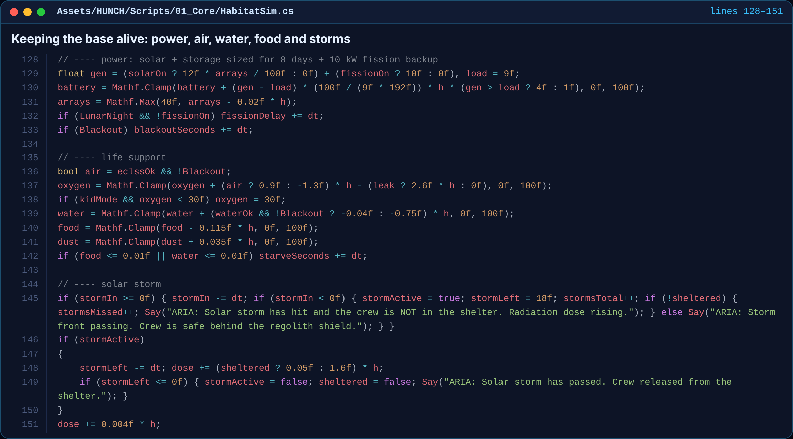
What it does. Before the crew update, the base itself is simulated. Solar panels and the fission backup charge the battery, the ECLSS life support adds oxygen, and water, food and dust change over time. A solar storm doses anyone not in the shelter with radiation.
Why it matters
Say(...).When it runs. Every frame during a mission, just before the crew update.
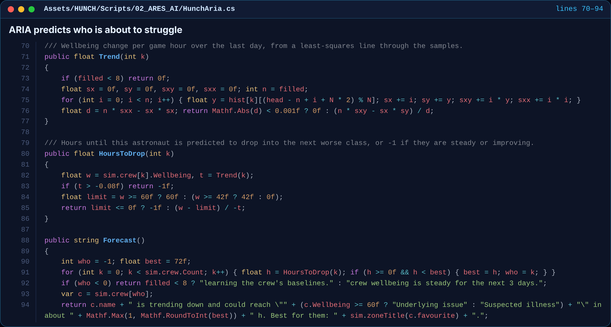
What it does. ARIA, the habitat AI, keeps a day of wellbeing history for each astronaut and fits a straight trend line through it. If someone is trending down, it works out roughly how many hours until they drop into “Underlying issue” or “Suspected illness”, and warns the commander early.
Why it matters
When it runs. Continuously. The forecast is shown on ARIA's panel and in the crew health dashboard.
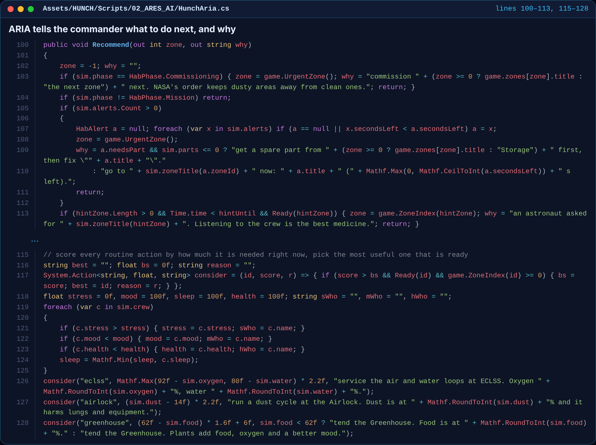
What it does. ARIA ranks what you should do right now: emergencies first (the alert with the least time left), then the crew, then routine systems. Every routine job gets a “how needed is this?” score, and ARIA picks the most useful one that isn't on cooldown.
Why it matters
When it runs. Whenever the HUD refreshes or the player asks ARIA for advice.
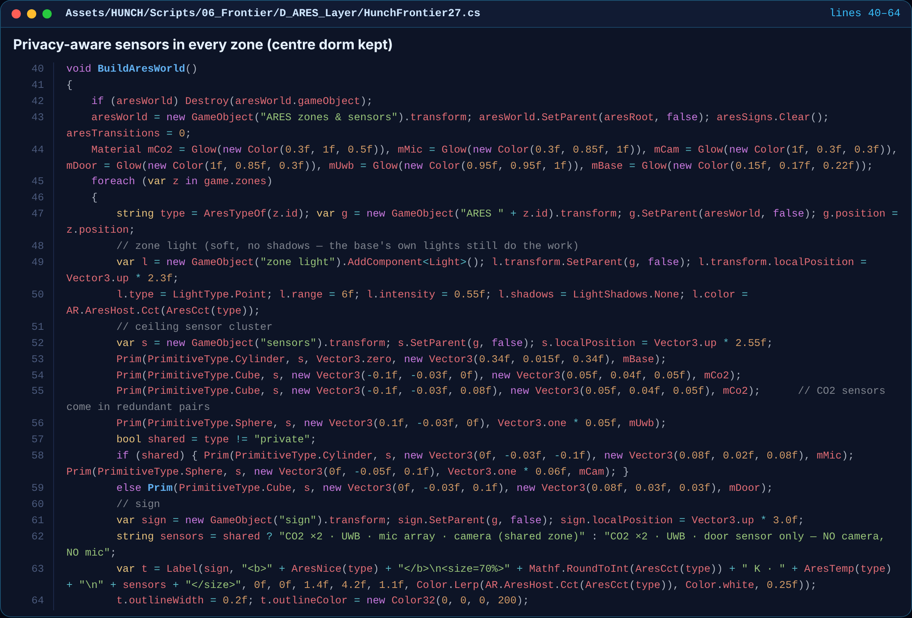
What it does. This places the Project ARES design inside the 3D base. Each module gets its zone light (warm for social areas, cool for work areas) and a ceiling sensor cluster showing what's installed there. Shared rooms get a mic array and camera. Private quarters get only a door sensor: no camera, no mic.
Why it matters
When it runs. Once when the base loads. It can be toggled from the Project ARES menu.
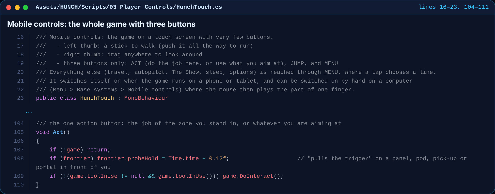
What it does. This is what makes the game playable on a phone or tablet. Your left thumb is a walk stick, your right thumb drags to look around, and there are only three buttons: ACT, JUMP and MENU. ACT is smart: it does the job of the zone you're standing in, or uses whatever you're aiming at.
Why it matters
When it runs. Every frame when mobile controls are on (in the browser on Unity Play and GitHub Pages).
Full source: realistic game scripts · sci-fi game scripts · this page on GitHub
© 2026 Jaineil R. — with thanks to Angel C. and Farhan K.